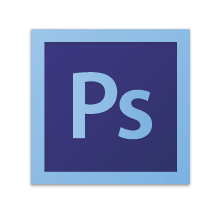
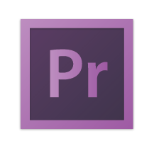
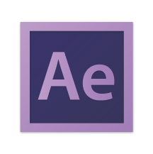

Skills
Expert proficiency
Expert proficiency

Expert proficiency

Proficient

Proficient
Working Knowledge
Experience
Creative Director
Washington Square News • December 2016 - Present
5.5K circulation on 47 newsstands located on NYU’s campus. Lead the creative team to produce a weekly paper as well special arts and fashion issues periodically throughout the year. Collaborate with fellow editors to facilitate consistent content creation. Produce graphics for print and online.
Creative Production Intern
Superfly • August 2017 - Present
Ideate and design pitch decks for Colossal Clusterfest and Bonnaroo to be sent to major networks such as Comedy Central, Warner Brothers, and FX. Create and update visual mood boards for two new Superfly festivals: Clusterfest and Lost Lake. Work across teams to research, ideate and execute visual, culinary, and non-music programming initiatives for Superfly events. Create one-sheets for festival art installations, stage scrim, and art programs.
Media Intern
Artists for Peace and Justice • August 2017 - Present
Design digital and print graphic materials — including invites, table cards, flags, and decks — for the Brilliant is Beautiful Gala in London with 180+ attendees. Manage photos and digital content. Update their website, APJNow.org, as necessary. Create graphics and animation for their Instagram with 42K followers.
Graphic Designer
Marni G. Designs • June 2014 - Present
5.5K circulation on 47 newsstands located on NYU’s campus. Lead the creative team to produce a weekly paper as well special arts and fashion issues periodically throughout the year. Collaborate with fellow editors to facilitate consistent content creation. Produce graphics for print and online.
Marketing Intern
Avalon Park Village • May 2017 - September 2017
Led a staff of 50+ students to create a print newspaper every six weeks and publish online news daily. Created a magazine-style special issue when the Coppell High School soccer team won the 2015 and 2016 soccer championship. While Editor-in-Chief, The Sidekick was named Dallas Morning News’ Best Newspaper and Coppell Student Media was named a National Scholastic Press Association Pacemaker Finalist, among many other honors.
Editor-in-Chief
The Sidekick Newspaper • August 2015 - May 2016
Led a staff of 50+ students to create a print newspaper every six weeks and publish online news daily. Created a magazine-style special issue when the Coppell High School soccer team won the 2015 and 2016 soccer championship. While Editor-in-Chief, The Sidekick was named Dallas Morning News’ Best Newspaper and Coppell Student Media was named a National Scholastic Press Association Pacemaker Finalist, among many other honors.
Media Intern
Artists for Peace and Justice • August 2017 - Present
Design digital and print graphic materials — including invites, table cards, flags, and decks — for the Brilliant is Beautiful Gala in London with 180+ attendees. Manage photos and digital content. Update their website, APJNow.org, as necessary. Create graphics and animation for their Instagram with 42K followers.
Education
COPPELL HIGH SCHOOL
2012 - 2016
International Baccalaureate Diploma Recipient
New York University
Anticipated Graduation: May 2020
Integrated Digital Media